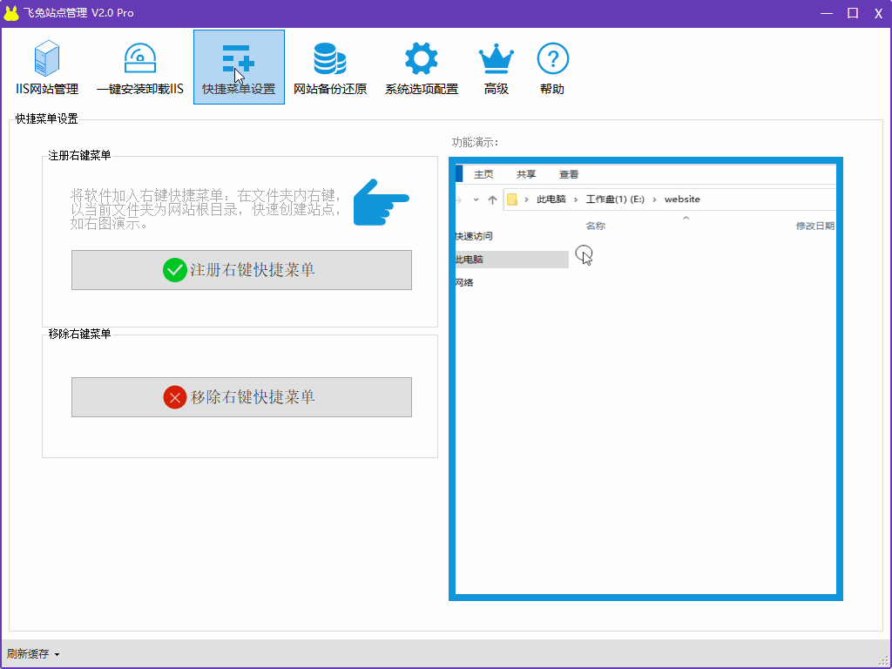
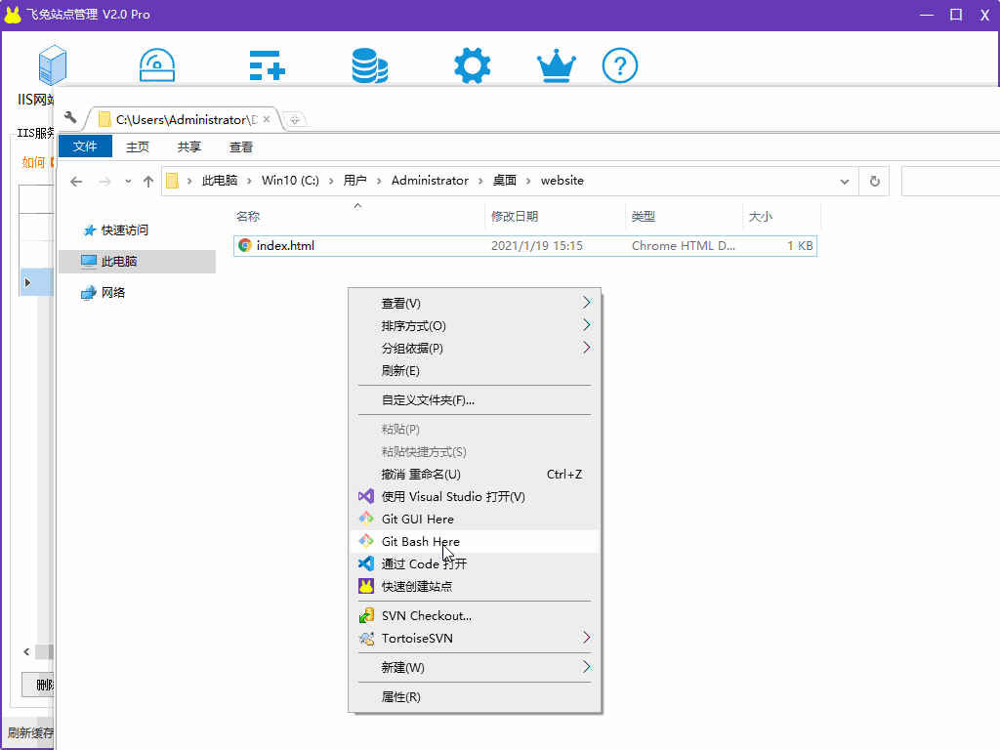

1. Open the software and click "shortcut menu setting" in the menu bar
2. Click the button "right click registration shortcut menu".
3. Open any file, right-click the folder, and display the shortcut in the pop-up menu, that is, the registration is successful.
Click "system option configuration" in the menu bar, check "add everyone permission for website directory", and right-click to re create the site.
